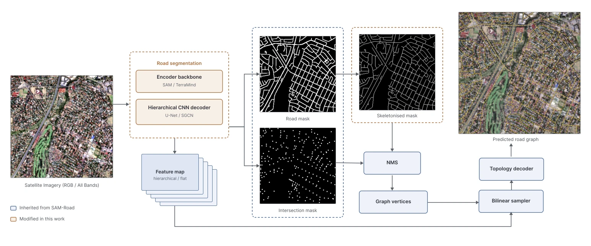
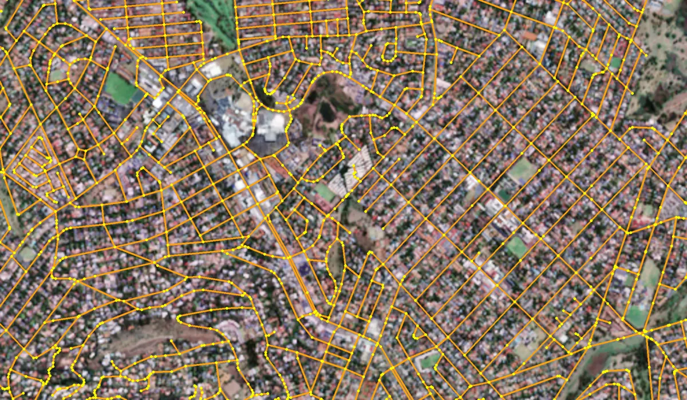
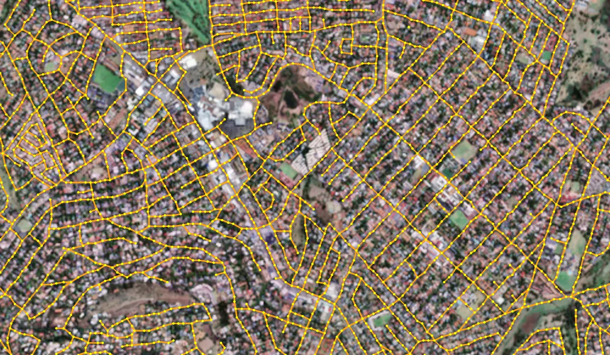
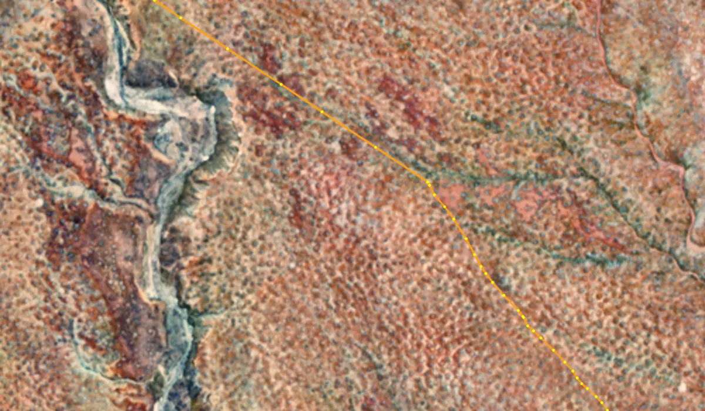
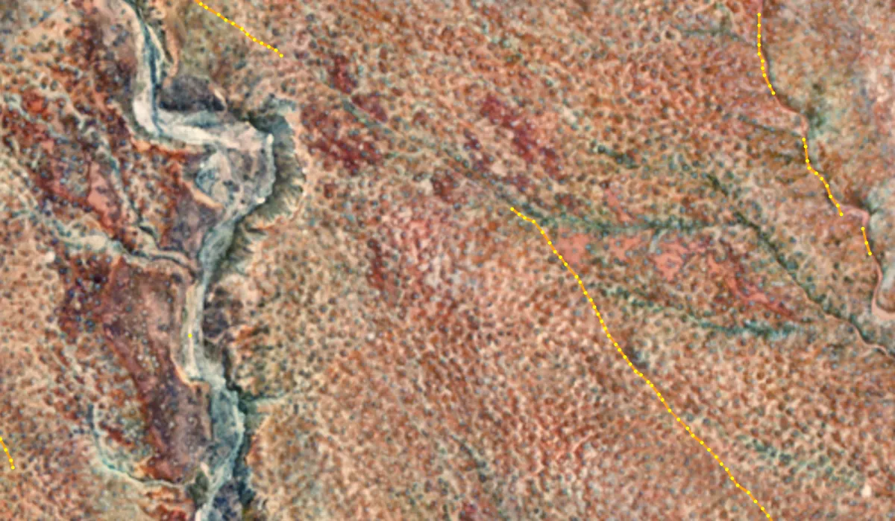
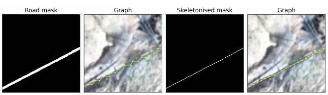

Kelvin Wei · Graph extraction sub-project
Improving SAM-Road for Road Network Graph Extraction from Medium-Resolution Sentinel Imagery in South Africa
Kelvin adapted SAM-Road, a state-of-the-art road-graph model, to multi-band 10 m Sentinel imagery, built the ROSA dataset pipeline, and integrated the models into InstaGeo.
Supervisors: Patrick Marais and Jonathan P. Shock · Department of Computer Science, University of Cape Town
Contribution
Kelvin's sub-project asks whether SAM-Road, designed for sub-metre aerial photographs, can extract road graphs from free 10 m Sentinel imagery. Alongside the modelling work, Kelvin built much of the data infrastructure behind the shared ROSA dataset. TODO: Kelvin to confirm wording and split of dataset work
- ROSA dataset pipeline. Cloud-free Sentinel-1/2 mosaics from Google Earth Engine, CD:NGI label filtering and width-aware rasterisation, stratified zone sampling, 512 × 512 tiling, graph labels and per-tile metadata.
- Training data loader. On-the-fly 2× bicubic upsampling with masks re-rasterised from vectors, road-aware random crops and augmentations, and sliding-window inference.
- SAM-Road modifications. Swapped SAM for the TerraMind geospatial backbone, replaced the segmentation component with hierarchical U-Net and SGCN models, and added mask skeletonisation before vertex extraction.
- Evaluation. Graph (APLS) and pixel metrics over three seeds, paired Wilcoxon signed-rank tests, and breakdowns by urbanisation and biome.
- InstaGeo integration. An end-to-end pipeline from imagery download to predicted road graphs on a web map.
Goals and research questions
SAM-Road predicts road graphs directly and parallelises well, which makes it attractive for country-scale mapping, but it was designed for RGB aerial imagery. At 10 m, small roads shrink to one or two pixels, Sentinel provides many more bands than RGB, and a vision-transformer backbone may lose fine local detail when it splits the image into patches. The goal was to modify SAM-Road's segmentation component to handle these differences.
Research questions TODO: match the wording in your paper/proposal
- Does replacing SAM's natural-image backbone with a geospatial foundation model (TerraMind) improve road extraction from Sentinel imagery?
- Do hierarchical CNN segmentation models (U-Net, SGCN), which preserve local features, outperform the transformer-based component at 10 m?
- Do Sentinel-1 radar and additional Sentinel-2 bands improve on enhanced RGB alone?
Method


Key steps
- Prepare inputs. Twelve bands per tile: contrast-enhanced RGB plus Sentinel-1 radar and Sentinel-2 multispectral bands. Random 128 × 128 crops are upsampled 2× (bicubic) to 5 m, and masks are re-rasterised from the road vectors to avoid upsampling artefacts.
- Segment roads. The segmentation component (SAM or TerraMind encoder, or a U-Net or SGCN model) predicts a road mask and an intersection mask.
- Skeletonise. Small holes are filled and the road mask is thinned to one pixel, so non-maximum suppression places graph vertices on road centrelines.
- Predict topology. Features are bilinearly sampled at each vertex and a transformer-based graph decoder predicts which vertices are connected.
- Infer at scale. Overlapping sliding windows cover each 512 × 512 tile; thresholds are tuned on the validation split.
- Evaluate. APLS for graph topology and precision, recall and F1 for the masks, over three seeds with paired Wilcoxon signed-rank tests.
Training: equally weighted BCE + Dice loss, Adam (base learning rate 10−3, pretrained encoder 0.1×), batch size 16, 100 epochs.
Results
| Model | Pretraining | Params (M) | GFLOPs | Precision | Recall | F1 | APLS |
|---|---|---|---|---|---|---|---|
| Enhanced RGB input | |||||||
| SAM-Road (baseline) | SA-1B | 87.21 | 69.37 | 61.31 ± 0.71 | 60.06 ± 0.24 | 58.78 ± 0.40 | 47.10 ± 0.43 |
| U-Net | ImageNet | 24.90 | 15.65 | 59.71 | 56.70 | 56.05 | 45.43 |
| SGCN | – | 44.36 | 151.74 | 63.90 | 54.88 | 57.33 | 45.41 |
| TerraMind | TerraMesh | 86.41 | 44.27 | 57.34 | 58.15 | 55.73 | 42.87 |
| Enhanced RGB + Sentinel-1/2 bands (12 bands) | |||||||
| SGCN | – | 44.37 | 152.42 | 65.56 ± 0.48 | 60.17 ± 0.72 | 61.04 ± 0.37 | 49.79 ± 1.55 |
| U-Net | ImageNet | 24.93 | 16.57 | 62.94 ± 0.76 | 60.26 ± 0.67 | 59.85 ± 0.22 | 48.92 ± 0.17 |
| TerraMind | TerraMesh | 88.18 | 88.66 | 62.09 | 59.62 | 58.65 | 45.88 |
| Method | All | Urban | Peri-urban | Rural |
|---|---|---|---|---|
| NMS only | 48.89 | 63.62 | 41.47 | 41.37 |
| + skeletonisation | 49.79 | 63.62 | 42.65 | 42.95 |
| CRESI post-processing | 50.56 | 62.61 | 43.67 | 45.47 |
| Model | 16 × 16 | 8 × 8 | 4 × 4 |
|---|---|---|---|
| SGCN | 51.45 · 27.5 s | 49.60 · 7.2 s | 23.53 · 2.1 s |
| U-Net | 49.11 · 5.1 s | 48.09 · 1.6 s | 19.65 · 0.8 s |
| SAM-Road | 47.47 · 17.0 s | 45.38 · 6.4 s | 21.24 · 2.2 s |
Example predictions


Prediction Ground truth

Prediction Ground truthTODO: confirm the model and seed behind these examples; add more tiles if useful

Findings and limitations
What we found
- Extra bands help every model. Sentinel-1/2 input beats enhanced RGB for all variants, though enhanced RGB carries most of the signal.
- SAM's pretraining is hard to beat on RGB. With RGB alone, the original SAM-Road outperforms the TerraMind, U-Net and SGCN replacements.
- SGCN is best but costly. It reaches 49.79 ± 1.55 APLS with Sentinel-1/2 bands but needs ~152 GFLOPs and varies across seeds; U-Net reaches 48.92 ± 0.17 at about a tenth of the compute.
- Skeletonisation matters. Thinning masks before vertex extraction significantly improves APLS (p = 1.1 × 10−6), mostly outside cities.
- Learned graph decoding suits cities. SAM-Road's graph decoder beats hand-crafted CRESI post-processing in urban areas, but post-processing wins in rural regions.
Limitations
- CD:NGI labels are imperfect; only the test split was manually cleaned.
- Images were upsampled 2× (5 m) rather than the more common 4×, due to compute limits.
- Yearly mosaics hide seasonal variation and fast-changing roads.
- Small roads and long-range connectivity remain hard because tiles are predicted independently.
Downloads
Cite this work
@techreport{wei2026samroad,
author = {Wei, Kelvin and Marais, Patrick and Shock, Jonathan P.},
title = {Improving {SAM-Road} for Road Network Graph Extraction from
Medium Resolution {Sentinel} Imagery in {South Africa}},
institution = {Department of Computer Science, University of Cape Town},
type = {Honours project report},
year = {2026}
}